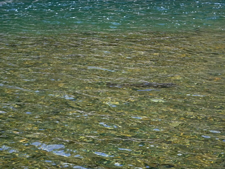
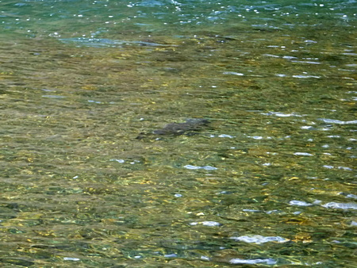
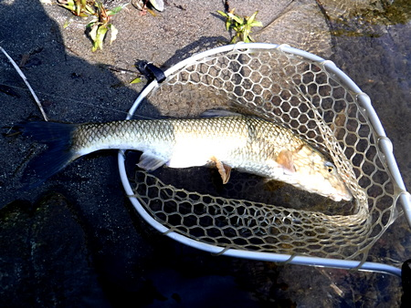
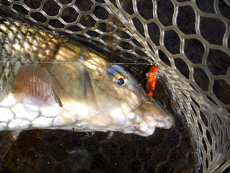
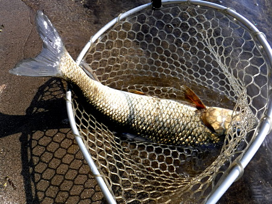

釣行日誌 故郷編
2020/04/11 春が来た
日本全土にコロナウィルスの感染が拡大しつつある土曜日、朝の畑の仕事を終えてから、カブに商売道具を積んで出撃。
今日は穏やかで良い釣り日和だ。僕のテリトリーとしては最上流にある河川敷公園から入り、慎重に浅場を伺う。
瀬が続き、流芯に落ち込むカケアガリの付近に、産卵を控えているのか、巨鯉が２、３匹ウロウロしているのが目視できる。しかし、お目当ての本命＝ニゴイの姿は見えず。

浅いところを悠々と泳ぐ魚体に惹かれたけれど、鯉は滅多なことではルアーに喰いつかないのであきらめて下流へ偵察に行くと、一匹、ニゴイが死んでいた。このポイントではニゴイが釣れた試しが無いのだが、居ることは居るのだと思い、今後の希望となった。
昼になったので、オニギリとビスケットをウェストバッグから取り出し、川原に広げてお弁当にする。
もぐもぐとオニギリを頬張って、ペットボトルのお茶をごくごく飲んでいると、またまた巨鯉が回遊してきて、ほんの目の前の浅瀬を我が物顔で通過してゆく。昨年の冬は、鯉対策のフライ各種で挑んでみたが、見事返り討ちに遭った。あれをストライクに持ち込めれば、相当なファイトが期待できるだろうけどなぁ.....。

負け惜しみと悔しさとを米粒やビスケットのかけらと共に飲み込んでから、荷物を持ち、カブに乗って橋を回って、フツーの人には目立たない分岐の流れのポイントへ移動する。
今日初めて訪れたこのポイントにはあまり人は来ないだろうと思っていたが、しっかり草を踏み分けて道が出来ていた。（笑）
油断せず、浅場から丹念にフローティングミノーで探り出す。
ところがピクリともアタリはなし。こんなもんかなぁと落胆しつつ、足音を忍ばせて対岸へ渡り、シンキングミノーに変えて、徐々に深みを攻めつつ釣り下ってゆく。
ふと、遠くの川底をコツコツと流していたラパラ CD-7 が重くなり、そこで止まってしまった。
『ありゃ！ また根がかりか？ これでまた 6.99ドルが消えた.....』
などと落胆しつつロッドを何回かあおり、なんとかルアーを回収できないかと、無駄な努力を始める。
すると、突如、遠方で止まっていた感触が動き出した！
遂に掛かったのだ。このポイントでは初めて。おそらく本命のニゴイだろう。ぐいぐいと力強く引くが、安価な割に非常にドラグの微調整が効く ABU のスピニングリールと、こちらも安価な MaxCatch の 7ft ロッドで、無理せずにこらえていると、しだいにこちらへと寄せてくることができた。
釣り用防寒ジャケットの襟にぶら下げたランディングネットを外し、落ち着いてランディング体勢に入る。しっかり引き寄せてから、大胆にすくい上げる。良い型のニゴイだ。（笑）


職業に貴賎の無いごとく、魚種や釣法にも貴賎は無く、シンプルに釣り上げた感動を味わう。とは言え、ココロの片隅に、これがサクラマスだったらなぁ...という、宝くじに当たるよりも儚い希望が顔を出す。
まだニゴイ釣りを始めて半年の経験しか無いが、ペアで棲んでいるのだろうか、たいてい同じポイントで２匹釣れることが多いので気を緩めずにキャストしていると、すぐさま２匹目がヒット、こちらも良い型である。

気を良くして、さらに50mほど釣り下ってから、ヒットが無かったので、今日の状況なら他の場所でも釣れると読んで、別のポイントへ移動。
しかし、なぜか、こちらのポイントでは出ない。昨年秋にはやはり２匹連発した有望個所なのだが。
親子連れが見学に来て、
「釣れますかぁ？」
と、声を掛けてくれたが、曇った顔で
「いやぁ、これからです！」
などと強がってみるのが精一杯。
ギャラリーの眼前で見事ヒットを！ なんて虫の良いことを考えていたら、良いポイントを根がかりで潰してしまう。もっと慎重にいかんとアカン。
底をかすめるように引かないと、おそらくニゴイがルアーを見てくれないだろうし、根掛かりを恐れて中層を引いてはヒットの確率はとても低くなるだろう。さんざん引いたのにここでアタリが無かったのはリトリーブが早すぎたかなぁ？といぶかしがりつつ、諦めきれずに水門下へ向かう。
小径を降りてゆくと、シロサギの大群が小魚を狙って集まっていた。かなり遠くから僕の気配を感じ取り、一斉に飛び立つ。アフリカ、ビクトリア湖のフラミンゴの大群とまでは行かないが、なかなか壮観な眺めである。（笑）
小魚がいるならと期待して、いつもの深みを攻めるが反応なし。いつの間にか時間だけが過ぎ、夕まづめ狙いでさらに下流の河川敷公園から入る。
ここは、去年の11月に初めてニゴイをルアーで釣った想い出のポイントでもある。暗くなりつつある本流を、ウェーディングスタッフ代わりのトレッキングポールを使いながら用心して対岸へと渡る。
重いウェストバッグを川原に置き、取り出したヘッドライトを装着してから、夕闇迫る流れに立ち込む。もはや、自身が一種のもののけと化している。暗くなったので、もののけ的な巨大ナマズちゃんが出るかもしれない。（笑）
ところが、である。絶好の水況と良いポイントにもかかわらず、なぜか出ない。我慢強く、丁寧に底を探りつつ下ってゆくと、流芯の深場がごく浅い瀬になってしまった所で、ラインの先におかしな反応があり、水面に魚体が飛び出した。
『ニゴイだっ！』
慌てて合わせを入れたが、しかし、セットフックできずにバラしてしまった。
『うむむむ.....今のは釣っておかなければならない１匹だったなぁ.....』
しつこく攻め直すが、一度唇に鈎が刺さってもう懲りたのか、二度と出なかった。
暗闇の中、小型ヘッドランプの力強い光を頼りに、単調ではあるが重く速い本流の流れを横切って堤防に上がり、草むらを掻き分けてバイクへ戻る。完全な暗闇の中、忘れ物の無いように帰り支度をして釣具一式をカブに括り付け、堤防道路を走り出す。
帰ってからかろうじて夕食を食べ終え、疲れてベッドに崩れ落ちて寝た。春の夜だった。
釣行日誌 故郷編 目次へ
サイトマップ
ホームへ
お問い合わせ